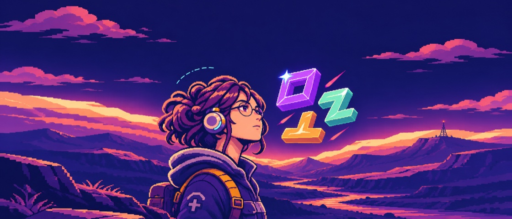

Morpheme Support
Need a hand with the game or want to report a bug? Email Virtual Perfection Cowboy. If something went wrong, include your device model, the mode you were playing, and what happened.
virtualperfectioncowboy@gmail.com
How do I pick up where I left off?
Open Story and select The Shape of Silence to resume from your last checkpoint. The game saves between puzzles. Your Marathon Top 10 and settings also stay on your device.
Can I play offline?
Yes. Story, Marathon, and Vs CPU all work offline.